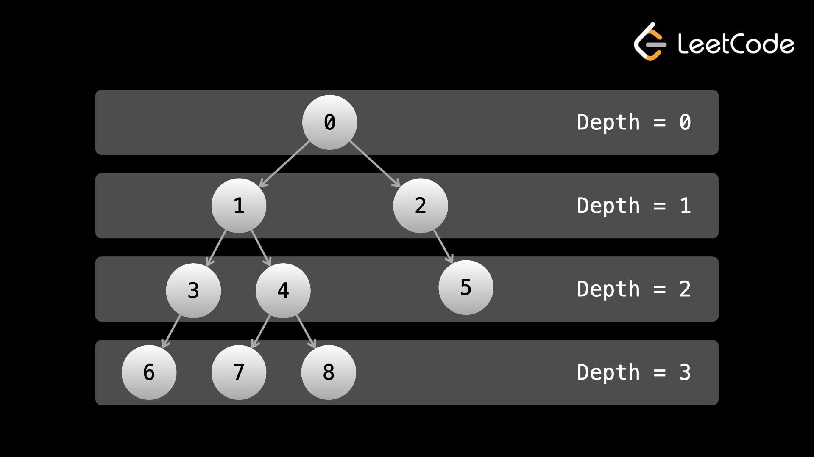

В DFS мы отдаем приоритет глубине. При поиске в ширину (BFS) мы отдаем приоритет ширине. Напомним, что глубина узла — это его расстояние от корня. В DFS мы всегда пытались спуститься как можно дальше, увеличивая глубину текущего узла, пока не достигали листа. Если вы выполнили DFS для большого дерева, глубина узлов, которые вы пройдете, может выглядеть примерно так: 0, 1, 2, 3, 4, 5, 6,....
В BFS мы проходим все узлы на заданной глубине, прежде чем перейти к следующей глубине. Таким образом, если вы выполнили BFS на большом полном двоичном дереве, глубина узлов, которые вы пройдете, будет выглядеть как 0, 1, 1, 2, 2, 2, 2, 3, 3, ....
«Полное» двоичное дерево — это дерево, в котором каждый уровень (кроме, возможно, последнего) заполнен, а все узлы на последнем уровне расположены как можно левее.
Мы можем рассматривать каждую глубину дерева как «уровень», как если бы дерево было зданием, корень которого — верхний этаж, а края — лестницей, ведущей на нижний этаж.

BFS, выполняемая для вышеуказанного дерева, будет посещать узлы в том же порядке, что и их значения. Мы посещаем все узлы на глубине d, прежде чем посетить любой узел на глубине d + 1.
В то время как DFS была реализована с использованием стека (рекурсия использует стек под капотом), BFS реализуется итеративно с помощью очереди. Вы можете реализовать BFS с рекурсией, но это не имеет смысла, поскольку это намного сложнее и не приносит никакой пользы. Поэтому в этом курсе мы будем рассматривать только итеративные реализации.
Ранее мы упоминали, что во многих задачах не имеет значения, выбираете ли вы DFS с предварительным порядком, с порядком или с последующим порядком, важно то, что вы просто посещаете все узлы. Если у вас возникла подобная проблема, то не имеет значения, используете ли вы BFS, поскольку при каждом «посещении» узла будет храниться достаточно информации независимо от порядка посещения.
Из-за этого с точки зрения проблем алгоритма двоичного дерева очень редко можно встретить проблему, согласно которой использование DFS «лучше», чем использование BFS. Однако реализация DFS обычно происходит быстрее, поскольку требует меньше кода, и ее легче реализовать при использовании рекурсии, поэтому для проблем, где BFS/DFS не имеет значения, большинство людей в конечном итоге используют DFS.
С другой стороны, существует немало проблем, когда использование BFS алгоритмически имеет гораздо больше смысла, чем использование DFS. Обычно это относится к любой задаче, в которой мы хотим обрабатывать узлы в соответствии с их уровнем. Мы увидим это в следующем примере и практических задачах.
В интервью вас могут спросить о некоторых мелочах, касающихся BFS и DFS, например об их недостатках. Основным недостатком DFS является то, что вы можете потратить много времени на поиск значения. Допустим, у вас было огромное дерево и вы искали значение, хранящееся в правом дочернем элементе корня. Если вы установите приоритет DFS слева, вы будете обходить все левое поддерево, что может составлять сотни тысяч, если не миллионы операций. Между тем узел находится буквально в одной операции от корня. Основным недостатком BFS является то, что если узел, который вы ищете, находится внизу, вы потратите много времени на поиск по всем уровням, чтобы достичь низа.
Что касается пространственной сложности, DFS использует линейное пространство в зависимости от высоты дерева (максимальной глубины), тогда как BFS использует линейное пространство с уровнем, имеющим наибольшее количество узлов. В некоторых случаях DFS будет использовать меньше места, в других случаях BFS будет использовать меньше.
Как и в случае с DFS, код/реализация BFS очень схожи для разных задач. Вот общий формат (в качестве примера мы печатаем значения узлов):
from collections import deque
def print_all_nodes(root):
queue = deque([root])
while queue:
nodes_in_current_level = len(queue)
# do some logic here for the current level
for _ in range(nodes_in_current_level):
node = queue.popleft()
# do some logic here on the current node
print(node.val)
# put the next level onto the queue
if node.left:
queue.append(node.left)
if node.right:
queue.append(node.right)
Примечание для пользователей JavaScript: JavaScript не поддерживает встроенную эффективную очередь, но мы можем обойти эту проблему, используя второй массив nextQueue для реализации эффективной BFS.
В начале каждой итерации внутри цикла while (где есть комментарий «выполните здесь некоторую логику для текущего уровня» ) очередь содержит ровно все узлы для текущего уровня. Вначале это только корень.
Затем мы используем цикл for для перебора текущего уровня. Мы сохраняем количество узлов в nodesInCurrentLevel текущего уровня перед итерацией, чтобы гарантировать, что цикл for не будет перебирать какие-либо другие узлы. Цикл for посещает каждый узел текущего уровня и помещает все дочерние узлы (узлы следующего уровня) в очередь.
Поскольку мы удаляем слева и добавляем справа (противоположные концы), после завершения цикла for очередь будет содержать все узлы на следующем уровне. Мы переходим к следующей итерации цикла while, и процесс повторяется.
При эффективной очереди операции удаления из очереди и постановки в очередь O(1), что означает, что временная сложность BFS такая же, как и DFS. Опять же, основная идея заключается в том, что мы посещаем каждый узел только один раз, поэтому временная сложность равна O(n⋅k), где n - общее количество узлов, а k — объем работы, которую мы выполняем на каждом узле, обычно О(1). Давайте рассмотрим некоторые примеры задач.
Пример 1: Двоичное дерево, вид
справа
Дан root двоичного дерева, представьте, что вы стоите по правую сторону от него.
Верните значения узлов, которые вы видите, упорядоченные сверху вниз.
По сути, этот вопрос запрашивает самый правый узел на каждом уровне. Если мы делаем BFS с тем же форматом кода, что и выше, на каждой итерации цикла while у нас есть момент, когда у нас есть целый уровень в массиве. Если мы отдадим приоритет левым дочерним элементам перед правыми, то окончательным значением на каждой итерации будет самый правый узел.
Стоя на правой стороне дерева, мы видим по одному узлу с каждого уровня — самый правый. Это уменьшает проблему «найти самый правый узел каждого уровня». Как упоминалось выше, если мы используем предоставленный формат BFS, то в начале каждой итерации цикла while в нашей очереди будет целый уровень. Поскольку мы добавляем левого дочернего элемента перед правым, узлы в нашей очереди также будут располагаться по порядку, а это означает, что последний элемент очереди будет иметь самый правый узел текущего уровня. Нам просто нужно получить доступ к этому узлу и добавить его значение в массив ответов.
def rightSideView(root: Optional[TreeNode]) -> List[int]:
if not root:
return []
ans = []
queue = deque([root])
while queue:
current_length = len(queue)
ans.append(queue[-1].val) # this is the rightmost node for the current level
for _ in range(current_length):
node = queue.popleft()
if node.left:
queue.append(node.left)
if node.right:
queue.append(node.right)
return ans
Этот алгоритм имеет временную и пространственную сложность O(n) по тем же причинам, что и алгоритмы из предыдущей статьи. Мы посещаем каждый узел только один раз и выполняем на каждом узле постоянный объём работы. Очередь может вместить до O(n) узлов.
Пример 2: Найти наибольшее
значение в каждой строке дерева
Дан root бинарного дерева, вернуть список наибольших элементов в каждой строке дерева.
В контексте двоичного дерева строка и уровень означают одно и то же. Опять же, каждая итерация внутри цикла while представляет собой прохождение уровня. Поэтому мы можем просто использовать целое число currMax, чтобы найти наибольшее значение на каждом уровне. Обратите внимание, насколько похож код в этом и предыдущем примере.
Как мы видели в предыдущем примере, в начале каждой итерации цикла while все узлы текущего уровня находятся в очереди. Мы могли бы перебрать очередь перед обработкой узлов и найти максимальное значение. В качестве альтернативы мы могли бы найти максимальное значение при более эффективной обработке узлов. Мы можем инициализировать currMax в начале итерации цикла while, а затем для каждого узла обновить currMax с помощью node.val, прежде чем помещать дочерние элементы в очередь. После цикла for currMax получит ответ для текущего уровня. Поскольку мы инициализируем currMax в начале каждой итерации цикла while, мы обрабатываем уровни отдельно.
class Solution:
def largestValues(self, root: Optional[TreeNode]) -> List[int]:
if not root:
return []
ans = []
queue = deque([root])
while queue:
current_length = len(queue)
curr_max = float("-inf") # this will store the largest value for the current level
for _ in range(current_length):
node = queue.popleft()
curr_max = max(curr_max, node.val)
if node.left:
queue.append(node.left)
if node.right:
queue.append(node.right)
ans.append(curr_max)
return ans
Временная и пространственная сложность O(n) по тем же причинам, что и в предыдущем примере.
Как упоминалось ранее, для бинарных деревьев BFS и DFS редко имеют значение. Однако в некоторых случаях BFS действительно проявляет себя, как в этих примерах. Когда мы перейдем к задачам с графами, мы увидим еще несколько задач, в которых BFS очень эффективен. А пока попробуйте самостоятельно решить следующие несколько практических задач, используя BFS.